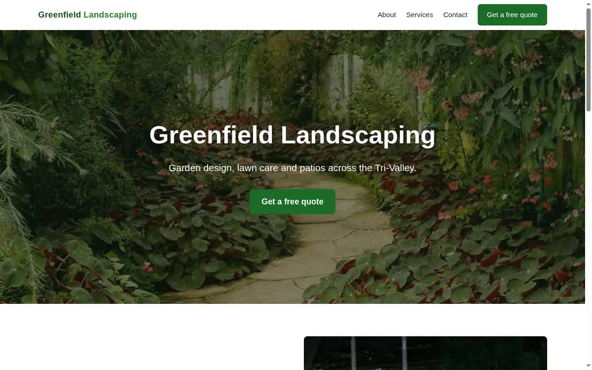

Case study · Core Web Vitals · mobile
One WordPress page. From 63→99 on mobile.
The same landscaping homepage, built three ways: a typical bloated Elementor site, the same site optimized in place, and a lean hand-coded rebuild. Every number below is Lighthouse on the mobile profile.
0
Before
LCP 26.5 s · 5,111 KiB
Bloated Elementor
0
Optimized in place
LCP 5.9 s · 1,183 KiB
Elementor kept
0
Lean rebuild
LCP 2.0 s · 461 KiB
Hand-coded
Page weight
The bytes a phone has to download before the page is usable.
The same page
All three builds render this. Only the speed changes.
greenfield-landscaping.example

What happened
Before · 63
Why it was slow
- Photos served as full-size 2400px JPEGs (~5 MB) into small slots, no modern format.
- The hero is a CSS background, discovered late, so the main content waited behind everything.
- Six plugins enqueued CSS and JS on every page; three are not used on this page.
- Render-blocking Google Fonts, every weight of two families.
In place · 71
Optimized, Elementor kept
- Images converted to display-sized WebP: ~5 MB down to ~0.8 MB.
- Deactivated the three unused plugins; removed the Google Fonts; system font fallback.
- Lazy-loaded below-the-fold images and preloaded the hero (the LCP element).
The ceiling here is the page builder's render-blocking CSS. Clearing it in place needs a premium optimizer (automatic critical CSS and JS delay). The editing workflow stays exactly as it was.
Rebuild · 99
Hand-coded, no page builder
- Same content and layout, hand-coded: one HTML file, CSS inlined, zero render-blocking.
- AVIF with WebP fallback, responsive hero with preload, system fonts.
- Width and height set on every image, so layout shift is zero.
Full numbers
Lighthouse mobile, simulated throttling. Reports: before, in place, rebuild.
Lighthouse mobile models a slow 4G phone, which is what Google PageSpeed and real mobile
visitors see, not what a fast desktop on a local connection shows. The lean rebuild is live,
so its score is reproducible in any PageSpeed test. The WordPress states are measured locally
and the full build is in the repository.
Is your WordPress site slow on mobile?
I can speed up the site you have, or rebuild the page lean. Open the live result or read the code.
Open the live rebuild View the source